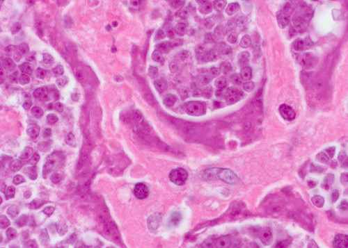
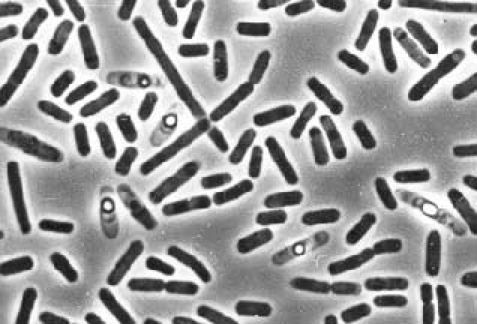
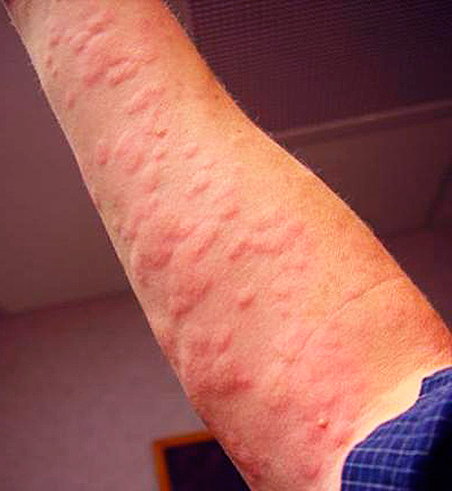
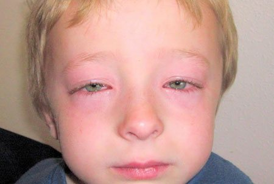
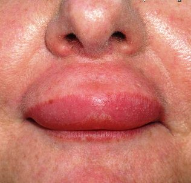

Главная→Пресс-центр→Новости →Центр Красоты и Здоровья: 97% людей имеют опасные аллергичиске реакции!
Откуда берется аллергия и как её победить навсегда?
По результатам проверки города выявлено 75% людей подвергнутых аллергическим реакциям!
От редакции:
По последним данным статистики, именно аллергические реакции в организме человека приводят к возникновению большинства опасных заболеваний. А все начинается с того, что у человека появляется зуд в носу, чихание, насморк, красные пятна по коже, в некоторых случаях удушье. Масштабы поражения таковы, что аллергический фермент присутствует почти у каждого человека.
Малышева Елена Васильевна
Советский и российский терапевт, педагог, доктор медицинских наук, профессор, директор Центра Красоты и Здоровья России.
Стаж работы - 36 лет.
Сегодня мы поговорим об этом с известной телеведущей, доктором медицинских наук Еленой Малышевой.
Корреспондент: "Добрый день, Елена Васильевна. Насколько правдивы данные ВОЗ о заражении паразитами? Правда ли что паразиты живут в нашем организме?"
Я лично доверяю статистике и могу сказать, что она подтверждается исследованиями нашей страны. Около 92% человеческих смертей вызваны разными видами аллергических реакций и именно из-за паразитов, которые находятся внутри нас. И это не только смерти от серьезных аллергических заболеваниях. Подавляющее большинство так называемых "естественных смертей" - это последствия присутствия паразитов в организме.
Корреспондент: "Вы можете привести какие-то конкретные примеры серьезных аллергических заболеваний?"
Малышева Е.В.: Я могу рассказать сотни случаев, но пожалуй остановлюсь на тех, которые наиболее понятно продемонстрируют всю опасность паразитов в нашем организме.
Во-первых, как выяснилось, появился новый вид аллергии – Algnimus pesentrum, которая способна приводить к раку. Причём, формально заражается не сам человек, а именно ген аллергии, но ее злокачественные клетки распространяются по всему организму, заражая человека, и все это начинается с обычных чиханий.
В центре этого фото клетки злокачественной опухоли, передавшейся человеку от аллергической реакции Algnimus pesentrum:


Ещё один распространенный случай аллергии - это бронхиальная астма, которая проявляется при контакте аллергика с аллергеном. Симптомы - сильная одышка и затрудненное дыхание. Бронхиальная астма просто изнутри удушает человека. В некоторых случаях люди даже не успевали понять что с ними происходит.
Так же распространенным видом аллергии является крапивница. Как выяснилось, обычная Крапивница влияет на клетки человека, тем самым вызывая их отмирание. Проще говоря, человек начинает неожиданно стареть и появляется сильный упадок сил, а в конечном итоге - летальный исход.
Есть много разновидностей крапивницы, которая влияет на организм человека. Считается, что крапивница весьма слабо распространенная аллергия, но на самом деле данный вид аллергической реакции присутствует приблизительно у 23% людей, то есть фактически у каждого четвертого. Увидеть эту аллергию можно в виде красных пятен на теле. Именно они становятся первопричиной того, что болит все тело, сильнейший упадок сил, а если говорить о смерти, то на долю этой аллергической реакции приходится почти 100% таких случаев. Может и не сразу, но поверьте со временем крапивница даст о себе знать.
Показать фото
Приведу еще ряд примеров аллергии из-за которых были смертельные случаи:
Человек, пораженный аллергией с таким последствием как анафилактический шок - тяжелое, угрожающее жизни человека состояние, обусловленное аллергической реакцией в ответ на контакт с аллергеном. Действительно, анафилактический шок – это наиболее тяжелое проявление аллергии. Он может возникнуть от укуса насекомого, приема лекарственного препарата, при проведении диагностических исследований и даже при употреблении пищевых продуктов.
Показать фото
Следующим видом аллергической реакции со смертельными исходом является отек Квинке, которому подвержены 95% людей, но они даже не знают об этом. Это ответ на любую аллергическую реакцию в следствии которой раздувает участки кожи и до неузнаваемости меняется внешность человека. Вот примеры как человека меняет аллергическая реакция:
Показать фото
Также, отек Квинке может вызывать удушение гортани. Человек, имеющий аллергию может даже не подозревать, что у него начался отек гортани, так как это процесс медленный но верный. Зафиксировано 100% летальных исходов от удушья из-за Отека Квинке.
Показать фото
В России особо широко распространены следующие виды aллергии:
Отек Квинке - как раз, о котором мы говорили. Ежегодно поражает до 1,5 миллионов человек. Появляется в процессе аллергической реакции (чаще всего от пыльцы, которая активно переносится по воздуху). Поражает и сдавливает гортань человека, в следствии чего наступает смерть.
Показать фото
Крапивница, как я говорил уже раньше, сильная аллергическая реакция в следствии которой появляется сильная сыпь, зуд, состояние обморока, провоцирует отек головного мозга, после чего наступает смерть.

Первые симптомы, по которым можно сказать, что у вас присутствует аллергия, это:
– Зуд в носу.
– Чихание (высыпания, слезящиеся глаза, насморк).
– Частые простуды, ангина, заложенность носа
– Хроническая усталость (Вы быстро устаете, чем бы ни занимались).
– Слезящиеся глаза.
- Частые головные боли.
- Насморк (или просто водянистые выделения из носа).
- Темные круги, мешки под глазами.
- Хрипы в лёгких.
При наличии 2 симптомов из перечисленных - у вас однозначно присутствует аллергия в организме.
Корреспондент: "Что же делать? Как тогда человеку можно обезопасить себя? Существуют же какие-то лекарства?"
Малышева Е.В.: Если же говорить о лекарствах, то тут всё проблематично. На сегодняшний день существует только одна единственная разработка, позволяющая избавиться от аллергии, которая к слову, создана в России.
Это средство - иммунномоделирующий препарат "Nootris", который создан при участии нашего Центра Красоты и Здоровья и группы независимых молодых учёных. Мы параллельно занимались работой над двумя десятками средств от аллергии, но в процессе разработки было решено остановиться именно на "Nootris", как на максимально эффективном варианте.
"Nootris" представляет собой уникальный сплав прополисное масло, экстракт кедра, кедровая живица, масло расторопши и облепиха прекрасно очищают лимфу, кровь, выводят токсины, укрепляют иммунитет и нормализуют работу эндокринной системы. В процессе создания и испытаний, это средство показало себя исключительно эффективным. Сегодня, это действительно единственная результативная разработка. И если бы речь шла только о деньгах, то на экспорт бы направлялся весь создаваемый объём. На Западе готовы покупать "Nootris" практически по любой цене, но у нас есть поручение от властей, согласно которому значительный объём средства должен оставаться внутри страны и продаваться гражданам России.
Более того - экспортная наценка для западных покупателей ("Nootris" продаётся за границу в десятки раз дороже его стоимости), позволяет нам продавать его внутри страны по ценам, которые гораздо ниже себестоимости.
Чем так хорош "Nootris"? Он чем-то отличается от других вариантов очистки организма от аллергии и паразитов?
Как я уже сказал, на сегодняшний день это единственное работающее средство очистки организма от паразитов, так же аллергии и ее симптомов, вообще существующее в мире. Именно поэтому за ним так гоняются международные аптечные сети и фармацевтические компании. По сравнению с другими антиаллергеными препаратами, это средство работает сразу против всего спектра аллергических реакций, которые могут присутствовать в человеческом организме, а так же влияющих на организм паразитов. С учетом проблем с диагностикой, это позволяет эффективно очищать весь организм. Я уже говорил выше, что практически невозможно понять, какой именно аллергической реакцией болен человек. А "Nootris" уничтожает и выметает все аллергенны из организма. На такое не способен больше ни один из существующих сегодня препаратов.
К тому же, это не химическое лекарство, а полностью натуральный продукт, исключающий аллергическую реакцию на него же, нарушение баланса кишечника и другие проблемы, которые могут возникнуть при лечении классическими таблетками, которые помимо результата ещё и нагружают организм, заставляя его перерабатывать массу разнообразных химических соединений.
Также при поддержке Центра Красоты и Здоровья был проведен опрос, который превзошел наши ожидания:
Опрос Центра Красоты и Здоровья: как вы избавились от аллергии и очистили свой организм от паразитов?
Медицинские препараты:
23%
"Nootris"
47%
Народная медицина:
8%
Я в поиске решения:
17%
Я не верю что это возможно:
5%
Корреспондент: "Я думаю, нашим читателям будет интересно прочитать о том, где приобрести "Nootris" для иммунитета?"
Малышева Е.В.: На данный момент времени "Nootris" доступен только для заказа на сайте производителя. Мы много раз пытались пробиться в аптечные сети, но те хотят выставить максимально высокую цену на него и продавать в несколько раз дороже, чем этого хотим мы. Понимаете, Центра Красоты и Здоровья - это некоммерческая структура и у нас нет цели заработать. Мы просто хотим обеспечить данным средством всё население, поэтому продаём его себе в убыток, компенсируя разницу за счет его экспорта. А основная цель аптечных сетей - заработать, поэтому у нас радикально разные подходы к ценообразованию.

Надеюсь, что со временем мы сможем договориться, и "Nootris" будет продаваться по такой же цене в аптечных сетях. Пока же его можно заказать только онлайн. Мы постарались сделать всё удобно и просто - средство доставляется почтой или курьером, а оплата происходит только после получения и проверки. Никаких лишних телодвижений совершать не нужно.
Корреспондент: "Спасибо вам большое, Елена Васильевна за интервью. Что бы на последок вы хотели бы сказать нашим читателям?"
Малышева Е.В.: В данный момент наш Центр проводит акцию "Избавимся от аллергии - спасем народ России". Поэтому сейчас можно приобрести "Nootris" по льготной цене.
Репортаж вела Марина Денисова
Важно! Исследования доказали, что - лучшее время для начала лечения от аллергии, присутствующей в организме, а так же паразитов, которые её вызывают. Благодаря тому, что происходит нормализация средней температуры, препарат усваивается на 45% быстрее, чем это происходит в другое время года. Восстановление функций организма происходит на 100% в течении всего курса лечения.
203 комментария за сегодня
Елена Борисенко
Когда начала принимать "Nootris", даже не представляла, что эффект окажется таким. Прошли боли в голове, исчезли постоянные пчихи и насморк. И сейчас в свои 43 года могу бегать и не задыхаться. Спасибо огромное, что открываете глаза людям, рассказывая им о проблеме. От участкового лора такого не услышишь.
2 часа назад
Вика Шевченко
Заказала себе "Nootris", получила на 4 день. Начала пить и словно ожила... Даже не думала, возможно жить без вечно слезящегося носа и покраснений на коже. Как же я счастлива
2 часа назад
Мария Селезнева
Недавно смотрела передачу по первому каналу, там тоже про этот "Nootris" говорили, как раз таже заставка что в статье показана. Многие врачи рекомендовали для лечения. Заказала, пользуюсь и не могу нарадоваться результатам. Чувствую себя гораздо лучше. Главное что уже избавилась от сыпи. Большое спасибо вам врачам за статью.
2 часа назад
Виктор Спиридонов
Тоже заказал. Обещали в течение недели доставить (в г. ). Там у них уже большая очередь на этот препарат. Чтож будем ждать.
2 часа назад
Мира Романова
Пила "Nootris". Эффект просто замечательный. Почувствовала себя молодой. Заметно улучшилося здоровье, теперь спокойно могу нюхать арамат цветов. Раньше об этом могла только мечтать. Рекомендую всем.
2 часа назад
Владимир Глухов
Давно мучился от аллергии. Пропил тоже "Nootris" неделю, все ушло. Вот теперь думаю - что стоит купить что бы пить для профилактики...
2 часа назад
Станислав Лебедев
Интервью очень интересное, спасибо! Раскрываете людям глаза!
2 часа назад
Елена Малышева
Принимайте "Nootris" не только когда уверены, что больны аллергией. Ведь благодаря медвежей желчи, он отлично действует как профилактическое средство.
С уважением, Елена.
С уважением, Елена.
2 часа назад
Евгения Симонова
Я регулярно заказываю. Сама принимаю и всей семье заодно организмы очищаю от аллергии. Сыну нашему "Nootris" здорово помог, а то у бедного отек Квинке был, прям как в статье описали. Бедный мой сынишка, даже не верится что он наконец поправился. На фотографии можете увидеть что с ним было

2 часа назад
Светлана Любимова
Присоединяюсь к рекомендациям. Когда начала пить - аллергию будто рукой сняло, сначала сильно испугался почему неожиданно аллергия прошла. Поехала в столицу, нашла там аллерголога, посмотрел он на всё это и сказал, что мол ли это все "Nootris" и как хорошо что я именно его приобрела. А то аллергия начала давать осложнения на гортань, и время от времени не могла дышать. Спасибо "Nootris"
2 часа назад
Люба Вотинцева
А это не развод? Почему в Интернете продают?
2 часа назад
Катерина Егорова
Люба, Вы статью читали вообще? В Интернете продают, потому что в аптеках - хапуги и хотят даже на этом заработать! Да и какой тут может быть развод, если оплата после получения? Я заказывала - мне курьер привез, я все проверила, посмотрела и только потом оплатила. На почте - то же самое, там тоже платеж при получении. Да и в Интернете сейчас все продают - от одежды и обуви до техники и мебели.
2 часа назад
Люба Вотинцева
Катерина, извиняюсь, не заметила на сайте производителя сначала информацию про наложенный платеж. Тогда все в порядке точно, если оплата при получении. Пойду, оформлю себе тоже заказ.
2 часа назад
Анжелика Тарасова
С трудом верится... но столько людей говорит что работает, должно работать. Я завтра начинаю!!
час назад
Лина Ушакова
Отличное средство. Пили его с мужем, у обоих значительные улучшения самочувствия. Действительно как будто помолодели, стало больше сил и желания. Аллергия, безусловно, угнетает человека. Когда от нее избавляешься, чувствуешь себя совсем по-другому
час назад
Ирина Шабалина
Спасибо за наводку. Надо почистить организм. Хоть раз в жизни. Никогда этого не делала, но сейчас думаю, что без моей аллергии всяко лучше будет, хоть не задохнусь. А то полюбому причина в этих паразитах :)
час назад
Елена Мещерякова
Вы не поверите и у меня была такая же проблема, слезились глаза, вечные чихания, совсем потеряла интерес к жизни, уже отчаялась и тут этот "Nootris" , это просто чудо средство, всем советую.
час назад
Артур Чирков
Скупой платит дважды. Нашел информацию о шипучих таблетках, а заказывать не стал. Решил купить на просторах интернета, подешевле. Нашел какую-то паленую партию. В итоге отругал себя и заказал на официальном сайте производителя. Странно, но "Nootris" пришел моментально, что для нашей почты крайне необычно. Спасибо Вам.
час назад
Анна Кузнецова
Читала отзывы и поняла, что надо брать ) Пойду оформлять заказ.
час назад
Полина Орлова
А я и не слышала до этого ни о чём таком. А тут вот оно как. Оформила заказ, вот звонили минут 20 назад, сказали, что постараются быстрее доставить.
час назад
Никита Юрищев
Я заказывал себе пару месяцев назад. Рассказал друг, который в больнице лором работает. Так вот - я даже не ожидал такого результата. Во-первых, чихать перестал сразу на следующий день. А во-вторых, ощущения после очистки организма от аллергии просто не передаваемые. Как будто в другой мир попал - могу дышать прекрасно и не бояться трогать животных. Ах, как же хорошо снова чувствовать себя живым
час назад
Оксана Виноградова
Хочу сказать громадное спасибо всем, кто приложил руку к созданию этого лекарства. У меня давно проглядывались аллергические реакции на пыль, не раз обращалась к врачам. Но те говорили, что мол всё в норме. А потом один отправил не на обычное обследование, а на какой-то специальный аппарат. И тот показал, что у меня куча паразитов в организме и они дали осложнение на легкие тем самым вызвав у меня аллергические реакции. Врач сказал - давай к операции готовься, с таким долго не живут, от силы протянешь с полгода. Но потом позвонил, порекомендовал "Nootris", объяснил, как заявку оставить. Легче мне сразу почти стало после приёма. А через месяц от аллергии и отека и и паразитов - следа не осталось. Правда восстанавливаюсь сейчас. Но без лекарства мне бы ещё вообще вырезали одно легкое. Или я бы вовсе умерла. Так что ещё раз спасибо! "Nootris" спас мне жизнь, буквально!
55 минут назад
Яна Медведева
"Nootris" – действительно, очень хорошее средство. Пользовалась им. Был Отек Квинке. После чистки от аллергии чувствовала себя, как будто окрыленной. От усталости не осталось и следа, теперь без пчихов и боязни метала (была аллергия на железо), полностью прошла депрессия. Делала чистку первый раз. Теперь думаю делать ее каждый год. Ощущение легкости и силы при этом непередаваемо. Можете посмотреть как меня раздувало при контакте с металом...

53 минуты назад
Светлана Волкова
Тоже есть опыт использования NOOTRIS и тоже положительный. Помог очиститься от аллергии и паразитов что ее вызывали. Стала намного лучше себя чувствовать. В общем, действительно полезное средство, которое оздоровляет. Заметила, что и на внешности положительно сказалось. Кожа стал более светлее да и глаже.
46 минут назад
Оксана Лямина
Чудо, а не средство! Я за первые 4 дня уже вижу отличный результат! Я просто прозрел, прям как в фильмах фантастических.
42 минуты назад
Лена Филатова
Всю жизнь мучилась с аллергией, пыльца для меня вообще была страхом, а одуванчики вообще молчу. Очень надеюсь, что этот апи поможет. Заказываю!
39 минут назад
Валентина Антонова
Случайно набрела на эту статью. И что я вижу!! Рекламируют наш "Nootris"! Ну не в смысле мой, а в том плане, что я мужу его покупала. Мы избавлялись от Крапивницы! Просто супер!
29 минут назад
Марина Березина
Чувствую себя после чистки намного лучше, как будто даже дышать стала по новому. Мало устаю и больше за день успеваю сделать. А вижу просто прекрасно. И на внешности это тоже сказалось. Волосы, ногти, кожа – все стало моложе и здоровее. Заказывала на этом сайте, через пару минут позвонила девушка и вежливо ответила на все мои вопросы.
21 минуту назад
Вера Исакова
В аптеке данный препарат не продают, скажите где его можно заказать что бы не напороться на подделку
12 минут назад
Елена Малышева
Ещё раз повторяю, что "Nootris" можно заказать ТОЛЬКО на официальном сайте производителя, чтобы не ошибиться, просто нажмите на кнопку "Перейти на сайт производителя" чуть ниже! Специально для наших читателей действует льготная цена - по договоренности с производителем, но она будет действовать совсем недолго, так что поторопитесь с заказом!
И остерегайтесь, пожалуйста, подделок.
С уважением, Елена.
5 минут назад
Марина Фролова
Отличное средство, избавило меня от проблем с аллергией всего за 2 недели. И мало того что оно эффективное, так еще и цена льготная! Спасибо!
1 минуту назад
Марина Фролова
Отличное средство, избавило меня от проблем с аллергией всего за 2 недели. И мало того что оно эффективное, так еще и цена 1 рубль! Спасибо!
Читать комментарий
Только что
Заказывала себе этот "Nootris". Последние 5 лет я думала, что не смогу избавиться от затруднительного дыхания, а оказалось что у меня была просто аллергия с последствием Бронхиальной астмы. Сейчас буквально летаю ) И посылка в город пришла очень быстро.